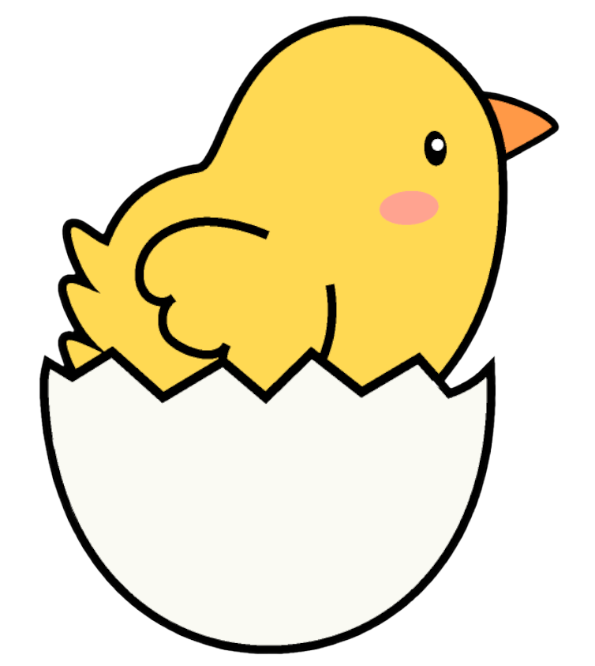
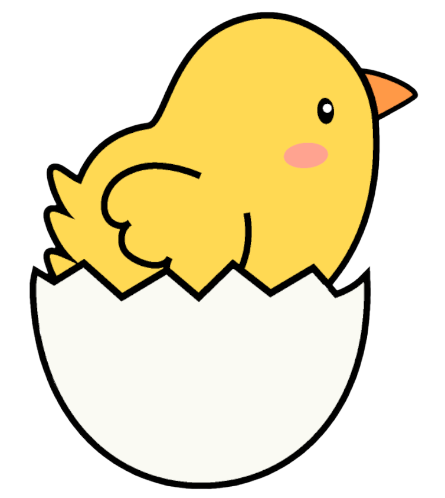

サステナビリティについて調べてみました④
脱炭素
二酸化炭素などの温室効果ガスの排出量から、
植林や森林管理などによる吸収量を差し引いて、合計を実質的にゼロにすること。
温室効果ガスは、二酸化炭素やメタンなどの温室効果を持つすべての気体を指す。
「緩和」と「適応」だけではなく、「損失・損害」も考える必要がある。
「緩和」は、どのように環境負荷を減らすかということ。
「適応」は、環境変化にどのように対応するかということ。
「損失・損害」はすでに起こった被害。
脱炭素のスコープ
スコープ1は調達、スコープ2は使用、スコープ3は廃棄。
特にスコープ3で排出される量を減らすことが目指されている。


 


